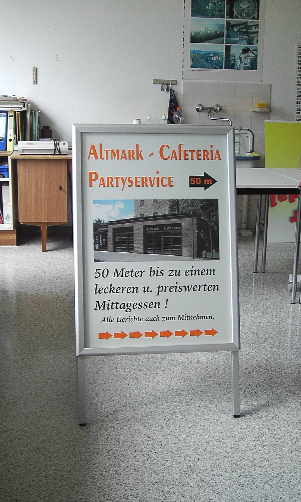
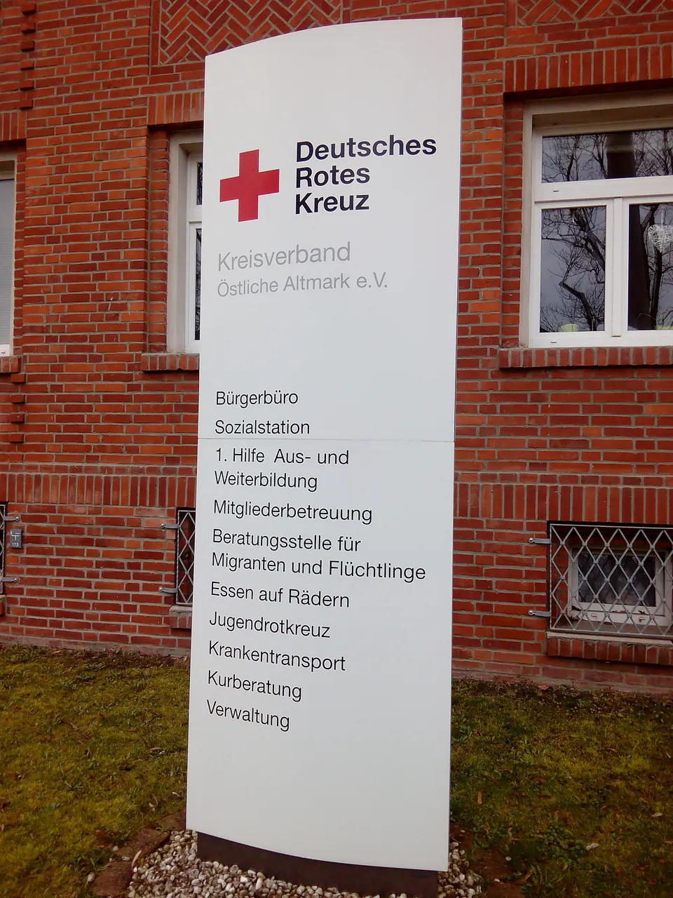

Aufsteller, Kundenstopper & Pylonen aus Stendal
Kundenstopper, Aufsteller und Displays für Eingang, Messe und Event sind mobil und schnell umgestellt. Pylonen und Stelen stehen fest an Einfahrt, Firmenhof oder im Gewerbegebiet und weisen dauerhaft den Weg zu Ihnen – auf Wunsch beidseitig bedruckt.
Unsere Leistungen
Aufsteller & Kundenstopper
- Kundenstopper
- Aufsteller für draußen
- Event- und Messeaufsteller
- Theken- und Tischaufsteller
Pylonen & Stelen
- Werbe- und Info-Pylonen
- Stelen
- Werbetürme und Werbeträger
Messe & Displays
- Roll-Ups
- Faltdisplays und Pop-Up-Messewände
- Messetheken und Promotion-Theken
- Spannrahmen und Textilbilder
Kundenstopper, Pylon oder Stele – was passt zu Ihrem Standort?
Kundenstopper
Im Klapprahmen tauschen Sie das Plakat selbst; für draußen gibt es Modelle mit befüllbarem Fuß.
Event- und Messeaufsteller
Mobil für Messestand und Eingang.
Pylon
Fest stehende Werbesäule für Einfahrt, Firmenhof oder Gewerbegebiet, auf Wunsch beidseitig bedruckt.
Rund um Ihren Messeauftritt
Für Messen und Events liefern wir Roll-Ups, Faltdisplays und Pop-Up-Messewände, Messetheken und Aufsteller – passend dazu Messefahnen, Event- und Messebanner und Werbeartikel mit Ihrem Logo. Gestaltung, Druck und Lieferung kommen aus einer Hand.
Referenzarbeiten


Weitere Referenzen im Portfolio.
Aufsteller und Pylonen in Stendal und der Altmark
Kundenstopper, Aufsteller und Pylonen liefern wir in Stendal und der gesamten Altmark – in Tangermünde, Osterburg, Havelberg, Gardelegen, Salzwedel sowie in Magdeburg und Umgebung. Pylonen und Werbeträger bauen wir auf Wunsch direkt bei Ihnen auf.
Häufige Fragen zu Aufstellern und Pylonen
Eignen sich die Aufsteller auch für draußen?
Ja. Kundenstopper und Aufsteller für den Außenbereich gibt es mit befüllbarem Fuß, der mit Wasser oder Sand beschwert wird – damit stehen sie auch bei Wind sicher. Für innen reichen leichtere Ausführungen.
Kann ich das Motiv später wechseln?
Bei Kundenstoppern mit Klapprahmen und bei Spannrahmen tauschen Sie das Motiv selbst aus. Das lohnt sich, wenn Sie saisonal oder für Aktionen wechseln wollen – Sie bestellen dann nur den neuen Druck, nicht das ganze System.
Was ist der Unterschied zwischen Pylon und Aufsteller?
Ein Aufsteller ist mobil und lässt sich täglich umstellen oder abends hereinholen. Ein Pylon ist eine feste, aufrecht stehende Werbeträgersäule, typisch für Firmenhöfe, Einfahrten und Gewerbegebiete.
Bedrucken Sie auch beidseitig?
Ja, Aufsteller und Pylonen lassen sich beidseitig bespielen, damit sie aus beiden Laufrichtungen wirken. Ob sich das lohnt, hängt vom Standort ab – das besprechen wir vorab.
Gibt es die Pylonen auch beleuchtet?
Nein, beleuchtete Pylonen, Leuchtkästen und Leuchtreklame bieten wir nicht an. Unsere Pylonen und Stelen sind unbeleuchtete Werbeträger, auf Wunsch beidseitig bedruckt, damit sie aus beiden Richtungen wirken.